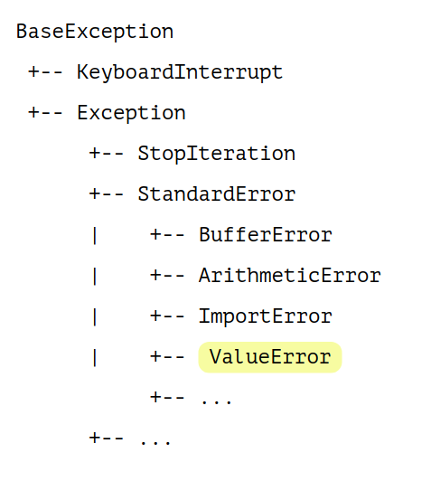

Функции
lst = input().split()
lst = input().split() # =(((
Тестовые и бинарные файлы в Python - две большие разницы
Чтобы создать файл, воспользуемся оператором open.
open('../examples/example1')
# Один обязательный аргумент - путь до файла
open('./examples/example1')
# Один обязательный аргумент - путь до файла
open('./examples/example1')
# <_io.TextIOWrapper name='./examples/example1'
# mode='r' encoding='UTF-8'>
r, w, a, +b, tencoding и errors.Открыть бинарный файл для чтения:
open('./examples/csc.db', 'r+b')
Открыть бинарный файл для чтения:
open('./examples/csc.db', 'r+b')
# <_io.BufferedRandom name='./csc.db'>
Открыть текстовый файл в кодировке 'cp1251' для добавления, игнорируя ошибки:
open('./examples/example1', 'a',
encoding='cp1251', errors='ignore')
Открыть текстовый файл в кодировке 'cp1251' для добавления, игнорируя ошибки:
open('./examples/example1', 'a',
encoding='cp1251', errors='ignore')
# <[...] name='./example1'
#mode='a' encoding='cp1251'>
Создать новый текстовый файл в системной кодировке и открыть его для записи:
open("./lecture4.tex", "w")
# <[...] name='./lecture4.tex' mode='x' encoding='UTF-8'>
my_file = open("some.txt", "w")
print("Имя файла: ", my_file.name)
print("Файл закрыт: ", my_file.closed)
print("В каком режиме файл открыт: ", my_file.mode)
my_file = open("some.txt", "w")
print("Имя файла: ", my_file.name) # 'some.txt'
print("Файл закрыт: ", my_file.closed) # False
print("В каком режиме файл открыт: ", my_file.mode) # 'w'
my_file.closed
my_file.closed # False
my_file.close()
my_file.closed # True
Изменения в самом файле произойдут только после его закрытия!
my_file = open('./examples/example1', 'r')
my_file.read(4)
my_file = open('./examples/example1', 'r')
my_file.read(4) # 'Hey!'
my_file = open('./examples/example1', 'r')
# Читаем строку
my_file.readline()
my_file = open('./examples/example1', 'r')
# Читаем строку
my_file.readline() # 'Hey! What's up?!'
my_file = open('./examples/example1', 'r')
# Читаем строки
my_file.readlines()
my_file = open('./examples/example1', 'r')
# Читаем строки
my_file.readlines()
#["Hey! What's up?!\n", '\n',
#'Hey! Hey! What do you say?!\n']
handle = open('./examples/example2'. 'w')
handle.write('habrahabr')
handle = open('./examples/example2'. 'w')
handle.write('habrahabr')
# ???
handle = open('./examples/example2'. 'w')
handle.write('habrahabr')
# 9
handle = open('./examples/example2'. 'w')
handle.writelines(['habrahabr', 'super good'])
handle = open('./examples/example3', 'w')
handle.tell()
handle = open('./examples/example3', 'w')
handle.tell() # 0
handle.seek(8)
handle.tell()
handle.seek(8)
handle.tell() # 8
handle.write('abc')
handle.tell() # ???
handle.write('abc')
handle.tell() # 11
sys.stdinsys.stdininput()
sys.stdoutsys.stdout и sys.stderrprint()
printprint('abc', file=handle)
import io
handle = io.StringIO("foo\n\bar")
handle.readline() #'foo\n'
handle.write("boo")
handle.getvalue() # 'foo\nboo'
Ура!
заходит как-то тестировщик в бар
заходит как-то тестировщик в бар
забегает в бар
заходит как-то тестировщик в бар
забегает в бар
пролезает в бар
заходит как-то тестировщик в бар
забегает в бар
пролезает в бар
прыгает в бар
заказывает себе кружку пива
заказывает себе кружку пива
два кружки пива
заказывает себе кружку пива
два кружки пива
-1 кружку пива
заказывает себе кружку пива
два кружки пива
-1 кружку пива
9999999 кружек пива
заказывает себе кружку пива
два кружки пива
-1 кружку пива
9999999 кружек пива
ававав кружек пива
number = int(input())
number = int(input('abc'))
# ???
number = int(input('abc'))
# ValueError: invalid literal for int() with base 10: ''

try:
number = int(input('abc'))
except ValueError:
print ('Пожалуйста, не ломай мой код!'\
'Введи число')
try:
# какой-то код
except Excetion:
# как-то обрабатываем
try:
# какой-то код
except Excetion: # =((((
# как-то обрабатываем
try:
# какой-то код
except Excetion: # =((((
# как-то обрабатываем
Сейчас Егор расскажет анекдот
try:
vk_client.get_friends(online=true)
except Exception as exception:
print ('Что-то страшное случилось,'\
'вот проблема: {e}'.format(e=exception))
try:
# тут что-то происходит
except ValueError:
# как-то обрабатываем
except KeyError:
# как-то обрабатываем
...
finally:
# так называемый "Код уборки"
class MyException(Exception): pass
raise MyException('Мое исключение')
Порой мы забываем закрыть файл
Порой мы забываем закрыть файл
Все мы люди
"with" expression ["as" target] ("," expression ["as" target])* ":"
suite
with open('newfile.txt', 'w', encoding='utf-8') as g:
d = int(input())
print('1 / {} = {}'
.format(d, 1 / d), file=g)
snake_case - для переменных и функцийCamelCase - для классовUPPER_TEXT_WITH_UNDERSCORE - для глобальных констант